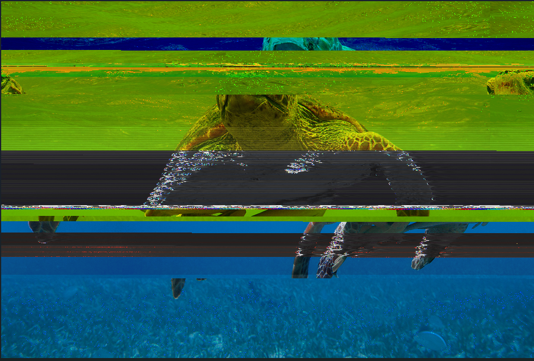
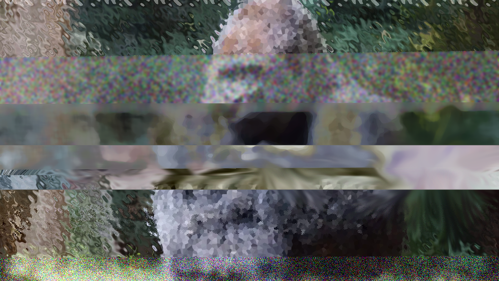
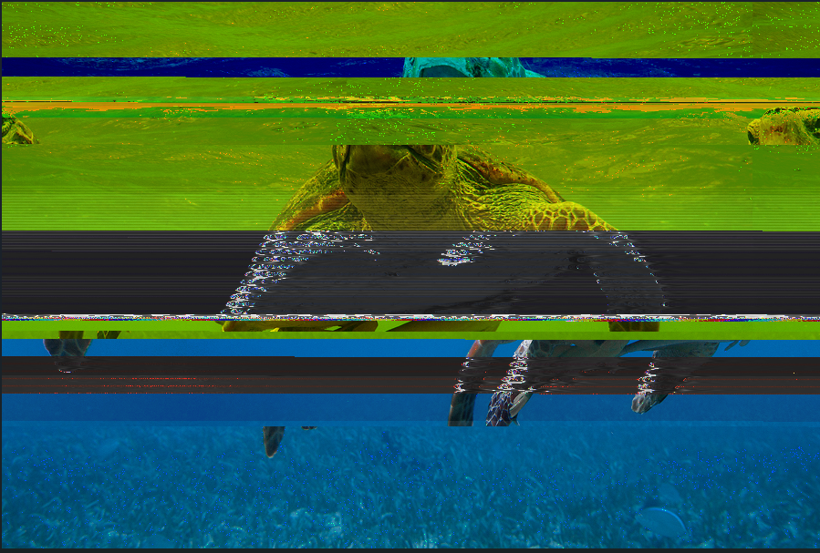
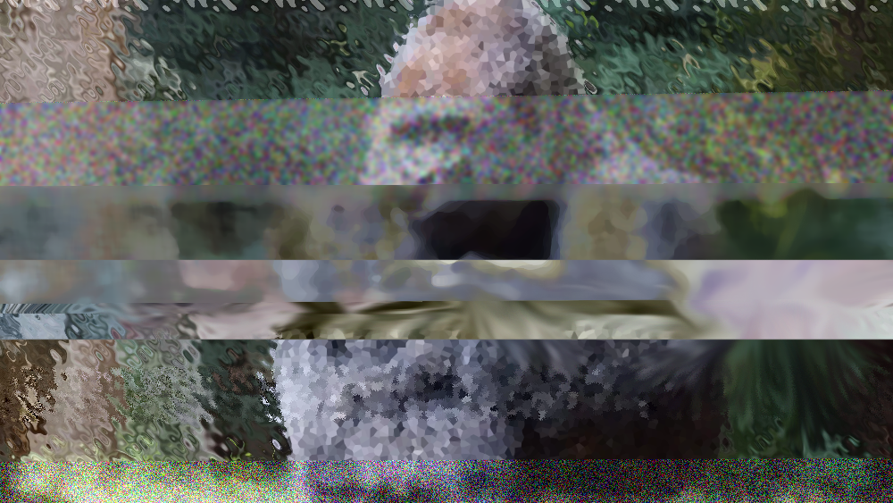

For my glitched images, I wanted to focus on themes of conservation and the vanishing of endangered species. I chose images of the loggerhead turtle, barn owl, and cross head gorilla, all of which are on the endangered species list, and corrupted them to make it seem like they're phasing out of reality.
Human environmental degradation and human-lead climate change are threatening these animals, so using a form of innovation humans use to benefit ourselves while significantly hurting the environment and living beings around us felt fitting to the ideas I wanted to present.
 


